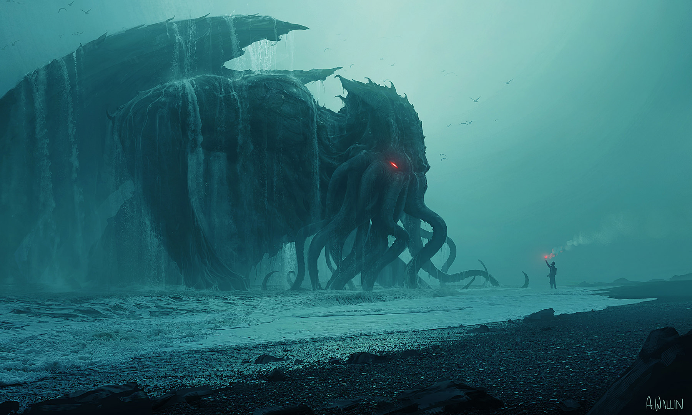

En lo persnal, mi monstruo favorito, auque mas que moustruo, una deidad. creado por H.P. Lovecraft, forma parte de una de las mitologías más importantes de nuestra historia que involucra criaturas cuya existencia misma se escapa del reino de la comprensión humana. Lovecraft lo describió en la “Llamada de Cthulhu” como un monstruo con una cabeza de pulpo cuyo rostro es una masa de tentáculos, un cuerpo escamoso, gran elasticidad, y al parecer, garras prodigiosas sobre las patas traseras y anteriores, con largas alas estrechas en la parte posterior.

No está muerto quien puede yacer eternamente, y con el paso de los años la misma muerte puede morir. -lovecraft